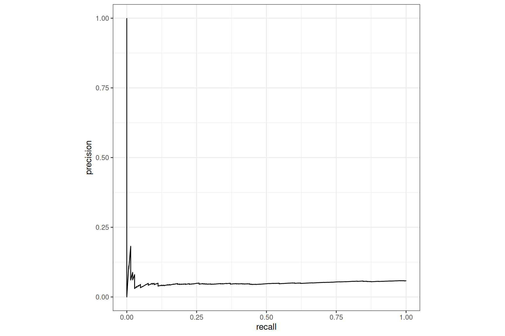
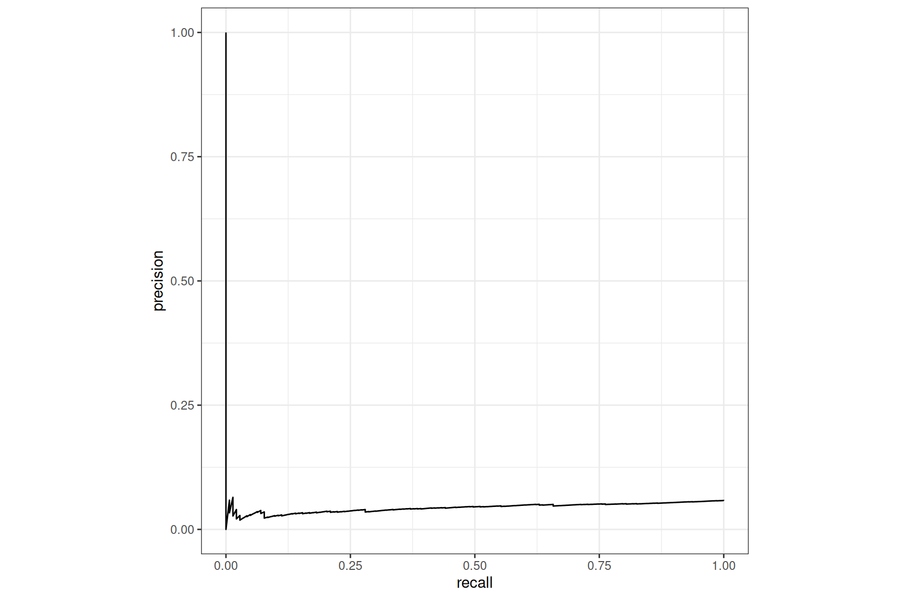
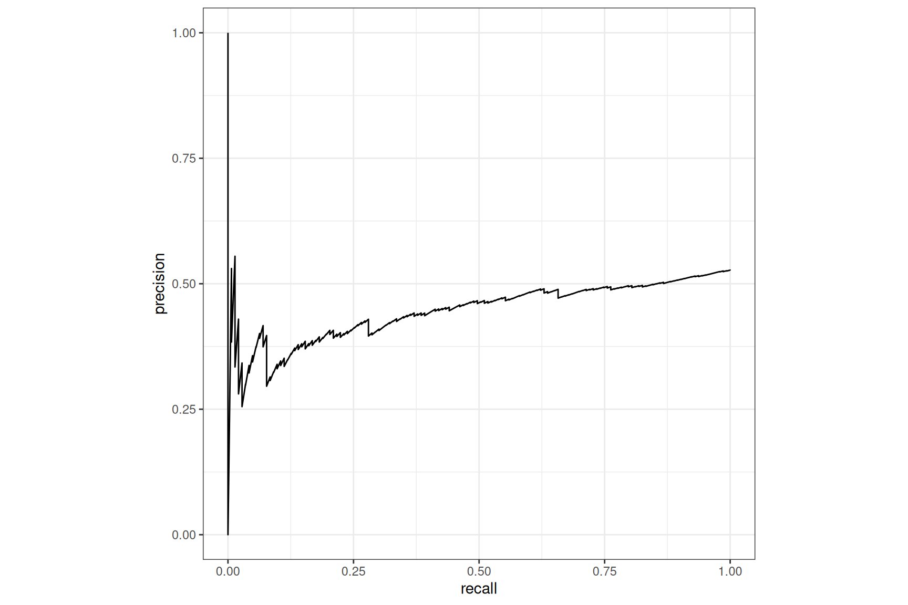
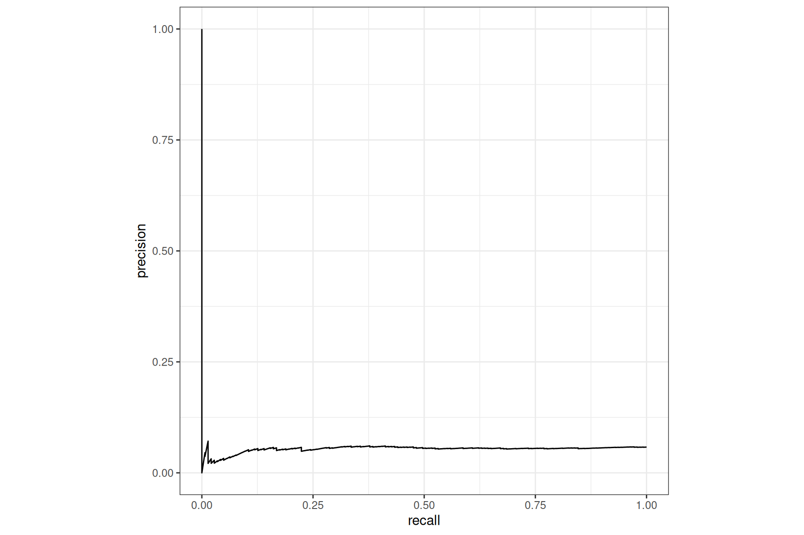
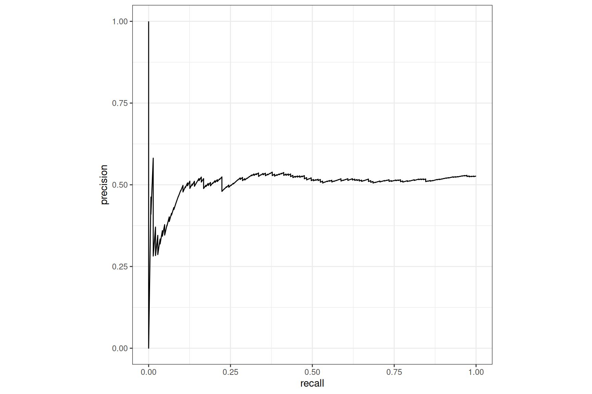

library(tabnet)
suppressPackageStartupMessages(library(tidymodels))
library(modeldata)
data("lending_club", package = "modeldata")
set.seed(20250409)Note
This vignette is a continuation of
vignette("tidymodels-interface"). So we highly encourage you to start with it to be up to speed with this vignette.
Introduction
The previously used lending_club dataset is highly imbalanced, leading to challenging result in the binary classification task. Despite we got fairly good accuracy with default model design, the roc_auc() metric was poor, mainly due to this imbalanced problem.
Here, we will see how tabnet features allow improved performance on such family of classification problems.
How imbalance is my problem ?
The target variable Class imbalance can be evaluated through the class imbalance Ratio :
With a class_ratio of 18.1, the target variable is seriously imbalanced, making the minority class much harder to model.
Solutions to improve imbalanced classification models
First, usual solution to such problem is over-sampling of the minority class, and/or down-sampling the majority class in the training data. We won’t cover this here.
The second solution is case weighting. As {tidymodels} offers the framework to manage such case weighting, we’ll first use it to compare two model families - XGBoost and Tabnet - with that feature.
Last, we would like to also optimize the model according to the metric we are looking at. As the metric of choice for imbalanced dataset are roc_auc() or roc_pr(), we definitively want a loss function that is a proxy of those. This loss is available in {tabnet} with the nn_aum_loss() from Optimizing ROC Curves with a Sort-Based Surrogate Loss for Binary Classification and Changepoint Detection (J Hillman, TD Hocking).
Using the AUC metric and pr_curve() plots
Measuring the ROC_AUC or AUC_PR can’t be separated from plotting the pr_curve().
Let’s baseline our models on two different workflows, one for tabnet, the other for XGBoost. This is a big chunk of code, but it is mainly a copy of the previous vignette.
lending_club <- lending_club |>
mutate(
case_wts = if_else(Class == "bad", class_ratio, 1),
case_wts = importance_weights(case_wts)
)
split <- initial_split(lending_club, strata = Class)
train <- training(split)
test <- testing(split)
tab_rec <- train |>
recipe() |>
update_role(Class, new_role = "outcome") |>
update_role(-has_role(c("outcome", "id", "case_weights")), new_role = "predictor")
xgb_rec <- tab_rec |>
step_dummy(term, sub_grade, addr_state, verification_status, emp_length)
tab_mod <- tabnet(epochs = 100) |>
set_engine("torch", device = "cpu") |>
set_mode("classification")
xgb_mod <- boost_tree(trees = 100) |>
set_engine("xgboost") |>
set_mode("classification")
tab_wf <- workflow() |>
add_model(tab_mod) |>
add_recipe(tab_rec) |>
add_case_weights(case_wts)
xgb_wf <- workflow() |>
add_model(xgb_mod) |>
add_recipe(xgb_rec) |>
add_case_weights(case_wts)Few details to be noticed
we compute and tag as
importance_weight()a new columncase_wtsin thelending_clubdataset.this column is excluded from the recipe() predictors role.
we explicitly mention this column roe in each
workflow()viaadd_case_weights().
We can now fit() each model and plot the precision-recall curve on the test-set :
tab_fit <- tab_wf |> fit(train)
xgb_fit <- xgb_wf |> fit(train)
tab_test <- tab_fit |> augment(test)
xgb_test <- xgb_fit |> augment(test)
tab_test |>
pr_curve(Class, .pred_good) |>
autoplot()
xgb_test |>
pr_curve(Class, .pred_good) |>
autoplot()

Both models are returning poor results.
Case-weight
Weighting each observation by the importance weight of the class is made available in {tabnet} through
marking one variable as importance weight variable via
workflow::add_case_weights()using the case_weight variable as such at inference time through the
case_weights =parameter in functions that allows it.
Let’s proceed
tab_test |>
pr_curve(Class, .pred_good, case_weights = case_wts) |>
autoplot()
xgb_test |>
pr_curve(Class, .pred_good, case_weights = case_wts) |>
autoplot() 

The boost on the pr_curve() is impressive for both models, Tabnet remains behind XGBoost here1.
ROC_AUM loss
{tabnet} implement the ROC AUM loss that will drive the torch optimizer to the best possible AUC. Let’s use it to compare to previous models :
# configure the AUM loss
tab_aum_mod <- tabnet(epochs = 100, loss = tabnet::nn_aum_loss, learn_rate = 0.02) |>
set_engine("torch", device = "cpu") |>
set_mode("classification")
# derive a workflow
tab_aum_wf <- workflow() |>
add_model(tab_aum_mod) |>
add_recipe(tab_rec) |>
add_case_weights(case_wts)
# fit and augment the test dataset with prediction
tab_aum_fit <- tab_aum_wf |> fit(train)
tab_aum_test <- tab_aum_fit |> augment(test)Now let’s compare the result on the PR curve with the default loss side by side:
tab_test |>
pr_curve(Class, .pred_good) |>
autoplot()
tab_aum_test |>
pr_curve(Class, .pred_good) |>
autoplot() 

We can see a real2 improvement with the AUM loss, compared to the default nn_bce_loss() but globally still a poor recall.
All together
Nothing prevent us to use both features, as they are independent. That is what we do here. Moreover, it is here without additional computation, as it is done post inference.
tab_test |>
pr_curve(Class, .pred_good, case_weights = case_wts) |>
autoplot()
tab_aum_test |>
pr_curve(Class, .pred_good, case_weights = case_wts) |>
autoplot() 
Here the boost in recall is impressive, making Tabnet model far above any experimented challenger model3.